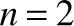
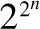
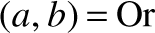
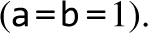

Contents
- Preface
- I HARDWARE
- 1 Boolean Logic
- 2 Boolean Arithmetic
- 3 Memory
- 4 Machine Language
- 5 Computer Architecture
- 6 Assembler
- II SOFTWARE
- 7 Virtual Machine I: Processing
- 8 Virtual Machine II: Control
- 9 High-Level Language
- 10 Compiler I: Syntax Analysis
- 11 Compiler II: Code Generation
- 12 Operating System
- 13 More Fun to Go
- Appendices
- 1 Boolean Function Synthesis
- 2 Hardware Description Language
- 3 Test Description Language
- 4 The Hack Chip Set
- 5 The Hack Character Set
- 6 The Jack OS API
- Index
List of Figures
Figure I.1
Major modules of a typical computer system, consisting of a hardware platform and a software hierarchy. Each module has an abstract view (also called the module’s interface) and an implementation. The right-pointing arrows signify that each module is implemented using abstract building blocks from the level below. Each circle represents a Nand to Tetris project and chapter—twelve projects and chapters altogether.
Figure 1.1
Three elementary Boolean functions.
Figure 1.2
All the Boolean functions of two binary variables. In general, the number of Boolean functions spanned by n binary variables (here ) is  (that’s a lot of Boolean functions).
Figure 1.3
Truth table and functional definitions of a Boolean function (example).
Figure 1.5
Composite implementation of a three-way And gate. The rectangular dashed outline defines the boundary of the gate interface.
Figure 1.6
Xor gate interface (left) and a possible implementation (right).
Figure 1.7
Gate diagram and HDL implementation of the Boolean function Xor  (And (a, Not (b)), And (Not (a), b)), used as an example. A test script and an output file generated by the test are also shown. Detailed descriptions of HDL and the testing language are given in appendices 2 and 3, respectively.
Figure 1.8
A screenshot of simulating an Xor chip in the supplied hardware simulator (other versions of this simulator may have a slightly different GUI). The simulator state is shown just after the test script has completed running. The pin values correspond to the last simulation step  Not shown in this screenshot is a compare file that lists the expected output of the simulation specified by this particular test script. Like the test script, the compare file is typically supplied by the client who wants the chip built. In this particular example, the output file generated by the simulation (bottom right of the figure) is identical to the supplied compare file.
Figure 1.9
Multiplexer. The table at the top right is an abbreviated version of the truth table.
Figure 1.10
Demultiplexer.
Figure 2.1
Two’s complement representation of signed numbers, in a 4-bit binary system.
Figure 2.2
Half-adder, designed to add 2 bits.
Figure 2.3
Full-adder, designed to add 3 bits.
Figure 2.4
16-bit adder, designed to add two 16-bit numbers, with an example of addition action (on the left).
Figure 2.5a
The Hack ALU, designed to compute the eighteen arithmetic-logical functions shown on the right (the symbols !, &, and | represent, respectively, the 16-bit operations Not, And, and Or). For now, ignore the zr and ng output bits.
Figure 2.5b
Taken together, the values of the six control bits zx, nx, zy, ny, f, and no cause the ALU to compute one of the functions listed in the rightmost column.
Figure 2.5c
The Hack ALU API.
Figure 3.1
The memory hierarchy built in this chapter.
Figure 3.2
Discrete time representation: State changes (input and output values) are observed only during cycle transitions. Within cycles, changes are ignored.
Figure 3.3
The data flip-flop (top) and behavioral example (bottom). In the first cycle the previous input is unknown, so the DFF’s output is undefined. In every subsequent time unit, the DFF outputs the input from the previous time unit. Following gate diagramming conventions, the clock input is marked by a small triangle, drawn at the bottom of the gate icon.
Figure 3.4
Sequential logic design typically involves DFF gates that feed from, and connect to, combinational chips. This gives sequential chips the ability to respond to current as well as to previous inputs and outputs.
Figure 3.5
1-bit register. Stores and emits a 1-bit value until instructed to load a new value.
Figure 3.6
16-bit Register. Stores and emits a 16-bit value until instructed to load a new value.
Figure 3.7
A RAM chip, consisting of n 16-bit Register chips that can be selected and manipulated separately. The register addresses  are not part of the chip hardware. Rather, they are realized by a gate logic implementation that will be discussed in the next section.
are not part of the chip hardware. Rather, they are realized by a gate logic implementation that will be discussed in the next section.
Figure 3.8
Program Counter (PC): To use it properly, at most one of the load, inc, or reset bits should be asserted.
Figure 3.9
The Bit (1-bit register) implementation: invalid (left) and correct (right) solutions.
Figure 4.2
Conceptual model of the Hack memory system. Although the actual architecture is wired somewhat differently (as described in chapter 5), this model helps understand the semantics of Hack programs.
Figure 4.3
Hack assembly code examples.
Figure 4.4
A Hack assembly program (example). Note that RAM[0] and RAM[1] can be referred to as R0 and R1.
Figure 4.5
The Hack instruction set, showing symbolic mnemonics and their corresponding binary codes.
Figure 4.6
A Hack assembly program that computes a simple arithmetic expression.
Figure 4.7
Array processing example, using pointer-based access to array elements.
Figure 4.8
The CPU emulator, with a program loaded in the instruction memory (ROM) and some data in the data memory (RAM). The figure shows a snapshot taken during the program’s execution.
Figure 5.1
A generic von Neumann computer architecture.
Figure 5.2
The Hack Central Processing Unit (CPU) interface.
Figure 5.3
The Hack instruction memory interface.
Figure 5.4
The Hack Screen chip interface.
Figure 5.5
The Hack Keyboard chip interface.
Figure 5.6
The Hack data memory interface. Note that the decimal values 16384 and 24576 are 4000 and 6000 in hexadecimal.
Figure 5.7
Interface of Computer, the topmost chip in the Hack hardware platform.
Figure 5.8
Proposed implementation of the Hack CPU, showing an incoming 16-bit instruction. We use the instruction notation cccccccccccccccc to emphasize that in the case of a C-instruction, the instruction is treated as a capsule of control bits, designed to control different CPU chip-parts. In this diagram, every c symbol entering a chip-part stands for some control bit extracted from the instruction (in the case of the ALU, the c’s input stands for the six control bits that instruct the ALU what to compute). Taken together, the distributed behavior induced by these control bits ends up executing the instruction. We don’t specify which bits go where, since we want readers to answer these questions themselves.
Figure 5.9
Proposed implementation of Computer, the topmost chip in the Hack platform.
Figure 5.10
Testing the Computer chip on the supplied hardware simulator. The stored program is Rect, which draws a rectangle of RAM[0] rows of 16 pixels each, all black, at the top-left of the screen.
Figure 6.1
Assembly code, translated to binary code using a symbol table. The line numbers, which are not part of the code, are listed for reference.
Figure 6.2
The Hack instruction set, showing both symbolic mnemonics and their corresponding binary codes.
Figure 6.3
Testing the assembler’s output using the supplied assembler.
Figure II.1
Manipulating points on a plane: example and Jack code.
Figure II.2
Jack implementation of the Point abstraction.
Figure II.3
Road map of part II (the assembler belongs to part I and is shown here for completeness). The road map describes a translation hierarchy, from a high-level, object-based, multi-class program to VM code, to assembly code, to executable binary code. The numbered circles stand for the projects that implement the compiler, the VM translator, the assembler, and the operating system. Project 9 focuses on writing a Jack application in order to get acquainted with the language.
Figure 7.1
The virtual machine framework, using Java as an example. High-level programs are compiled into intermediate VM code. The same VM code can be shipped to, and executed on, any hardware platform equipped with a suitable JVM implementation. These VM implementations are typically realized as client-side programs that translate the VM code into the machine languages of the target devices.
Figure 7.2
Stack processing example, illustrating the two elementary operations push and pop. The setting consists of two data structures: a RAM-like memory segment and a stack. Following convention, the stack is drawn as if it grows downward. The location just following the stack’s top value is referred to by a pointer called sp, or stack pointer. The x and y symbols refer to two arbitrary memory locations.
Figure 7.3a
Stack-based evaluation of arithmetic expressions.
Figure 7.3b
Stack-based evaluation of logical expressions.
Figure 7.4
Virtual memory segments.
Figure 7.5
The arithmetic-logical commands of the VM language.
Figure 7.6
The VM emulator supplied with the Nand to Tetris software suite.
Figure 8.1
Branching commands action. (The VM code on the right uses symbolic variable names instead of virtual memory segments, to make it more readable.)
Figure 8.2
Run-time snapshots of selected stack and segment states during the execution of a three-function program. The line numbers are not part of the code and are given for reference only.
Figure 8.3
The global stack, shown when the callee is running. Before the callee terminates, it pushes a return value onto the stack (not shown). When the VM implementation handles the return command, it copies the return value onto argument 0, and sets SP to point to the address just following it. This effectively frees the global stack area below the new value of SP. Thus, when the caller resumes its execution, it sees the return value at the top of its working stack.
Figure 8.4
Several snapshots of the global stack, taken during the execution of the main function, which calls factorial to compute 3!. The running function sees only its working stack, which is the unshaded area at the tip of the global stack; the other unshaded areas in the global stack are the working stacks of functions up the calling chain, waiting for the currently running function to return. Note that the shaded areas are not “drawn to scale,” since each frame consists of five words, as shown in figure 8.3.
Figure 8.5
Implementation of the function commands of the VM language. All the actions described on the right are realized by generated Hack assembly instructions.
Figure 8.6
The naming conventions described above are designed to support the translation of multiple .vm files and functions into a single .asm file, ensuring that the generated assembly symbols will be unique within the file.
Figure 9.1
Hello World, written in the Jack language.
Figure 9.2
Typical procedural programming and simple array handling. Uses the services of the OS classes Array, Keyboard, and Output.
Figure 9.3a
Fraction API (top) and sample Jack class that uses it for creating and manipulating Fraction objects.
Figure 9.3b
A Jack implementation of the Fraction abstraction.
Figure 9.4
Linked list implementation in Jack (left and top right) and sample usage (bottom right).
Figure 9.5
Operating system services (summary). The complete OS API is given in appendix 6.
Figure 9.6
The syntax elements of the Jack language.
Figure 9.7
Variable kinds in the Jack language. Throughout the table, subroutine refers to either a function, a method, or a constructor.
Figure 9.8
Statements in the Jack language.
Figure 9.9
Screenshots of Jack applications running on the Hack computer.
Figure 10.1
Staged development plan of the Jack compiler.
Figure 10.2
Definition of the Jack lexicon, and lexical analysis of a sample input.
Figure 10.3
A subset of the Jack language grammar, and Jack code segments that are either accepted or rejected by the grammar.
Figure 10.4a
Parse tree of a typical code segment. The parsing process is driven by the grammar rules.
Figure 10.4b
Same parse tree, in XML.
Figure 10.5
The Jack grammar.
Figure 11.1
The Point class. This class features all the possible variable kinds (field, static, local, and argument) and subroutine kinds (constructor, method, and function), as well as subroutines that return primitive types, object types, and void subroutines. It also illustrates function calls, constructor calls, and method calls on the current object (this) and on other objects.
Figure 11.2
Symbol table examples. The this row in the subroutine-level table is discussed later in the chapter.
Figure 11.3
Infix and postfix renditions of the same semantics.
Figure 11.4
A VM code generation algorithm for expressions, and a compilation example. The algorithm assumes that the input expression is valid. The final implementation of this algorithm should replace the emitted symbolic variables with their corresponding symbol table mappings.
Figure 11.5
Expressions in the Jack language.
Figure 11.6
Compiling if and while statements. The L1 and L2 labels are generated by the compiler.
Figure 11.7
Object construction from the caller’s perspective. In this example, the caller declares two object variables and then calls a class constructor for constructing the two objects. The constructor works its magic, allocating memory blocks for representing the two objects. The calling code then makes the two object variables refer to these memory blocks.
Figure 11.8
Object construction: the constructor’s perspective.
Figure 11.9
Compiling method calls: the caller’s perspective.
Figure 11.10
Compiling methods: the callee’s perspective.
Figure 11.11
Array access using VM commands.
Figure 11.12
Basic compilation strategy for arrays, and an example of the bugs that it can generate. In this particular case, the value stored in pointer 1 is overridden, and the address of a[i] is lost.
Figure 12.1
Multiplication algorithm.
Figure 12.2
Division algorithm.
Figure 12.3
Square root algorithm.
Figure 12.4
String-integer conversions. (appendChar, length, and charAt are String class methods.)
Figure 12.5a
Memory allocation algorithm (basic).
Figure 12.5b
Memory allocation algorithm (improved).
Figure 12.6
Drawing a pixel.
Figure 12.7
Line-drawing algorithm: basic version (bottom, left) and improved version (bottom, right).
Figure 12.8
Circle-drawing algorithm.
Figure 12.9
Example of a character bitmap.
Figure 12.10
Handling input from the keyboard.
Figure 12.11
A trapdoor enabling complete control of the host RAM from Jack.
Figure 12.12
Logical view (left) and physical implementation (right) of a linked list that supports dynamic memory allocation.
Figure A1.1
Synthesizing a Boolean function from a truth table (example).
Figure A2.1
HDL program example.
Figure A2.2
Buses in action (example).
Figure A2.3
Built-in chip definition example.
Figure A2.4
DFF definition.
Figure A2.5
A chip that activates GUI-empowered chip-parts.
Figure A2.6
GUI-empowered chips demo. Since the loaded HDL program uses GUI-empowered chip-parts (step 1), the simulator renders their respective GUI images (step 2). When the user changes the values of the chip input pins (step 3), the simulator reflects these changes in the respective GUIs (step 4).
Figure A3.1
Test script and compare file (example).
Figure A3.2
Variables and methods of key built-in chips in Nand to Tetris.
Figure A3.3
Testing the topmost Computer chip.
Figure A3.4
Testing a machine language program on the CPU emulator.
Figure A3.5
Testing a VM program on the VM emulator.